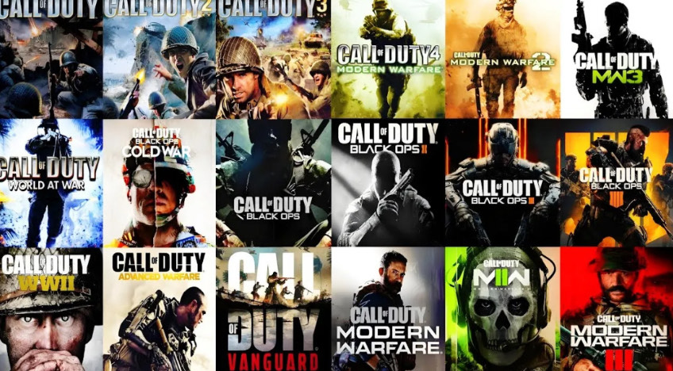

When he’s not on the ice or the volleyball court, Carter enjoys playing video games, especially sports and shooter games like NHL and Call of Duty. He usually plays with his girlfriend and enjoys being part of a group, whether it’s on the team or gaming together. What Carter loves most about all his hobbies is that they involve other people, creating fun and social experiences. He finds skating in hockey and precise passing in volleyball to be challenging, but those challenges make the games more rewarding. Overall, his hobbies keep him active, engaged, and connected with others, and he enjoys every opportunity to improve and have fun along the way.